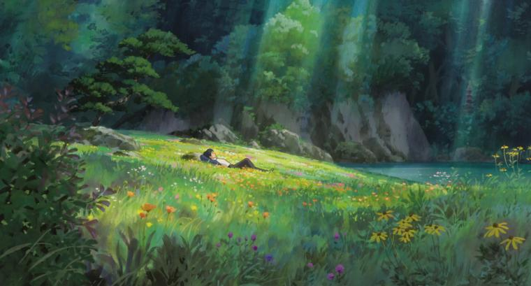
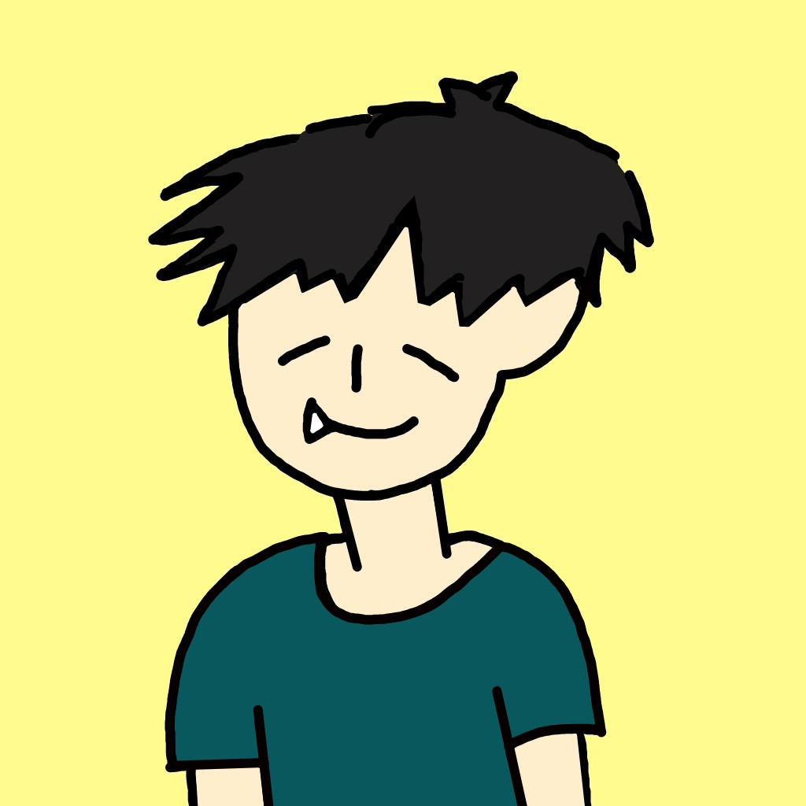
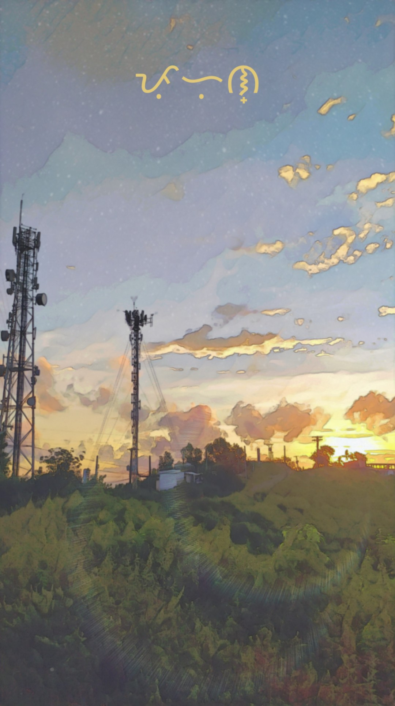

FEELING MY OATS
A myriad of selfies. September 15, 2021

Lately, I have been apathetic with most things: being alone, getting old, life. But in the slightest fraction of a moment that I get to feel my oats, I flaunt them! True enough that I rarely get to feel this way–when I find time to take photos of myself. Read More...
FIND SOLACE IN SOLITUDE
An escape from the mundane. February 15, 2022

It was last year since I decided to go on a run. I don't know, I just decided to be physically active. What I did not know was how much wonder and solace I found and still find when I go out for a run. Eventually a run conceded into a jog, a jog slowed its pace and became a mere walk, until a walk halts into a stop. A stop that I did not realize would bring me a moment of clarity. Read More...
About Me

A leo sun and a capricorn moon.
A leo sun and a capricorn moon.
Latest Post

Follow Me
Socials:
@vicbontia
Email:
vicdanielleyoo@gmail.com